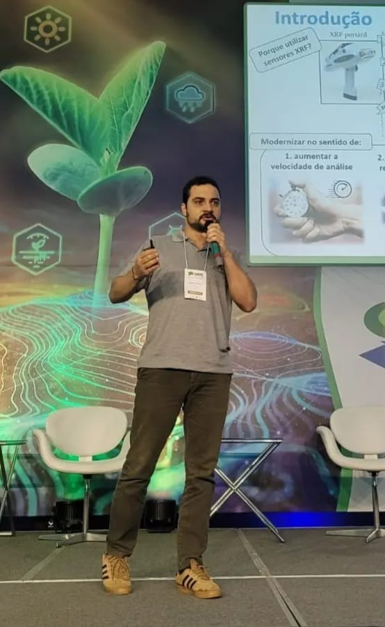
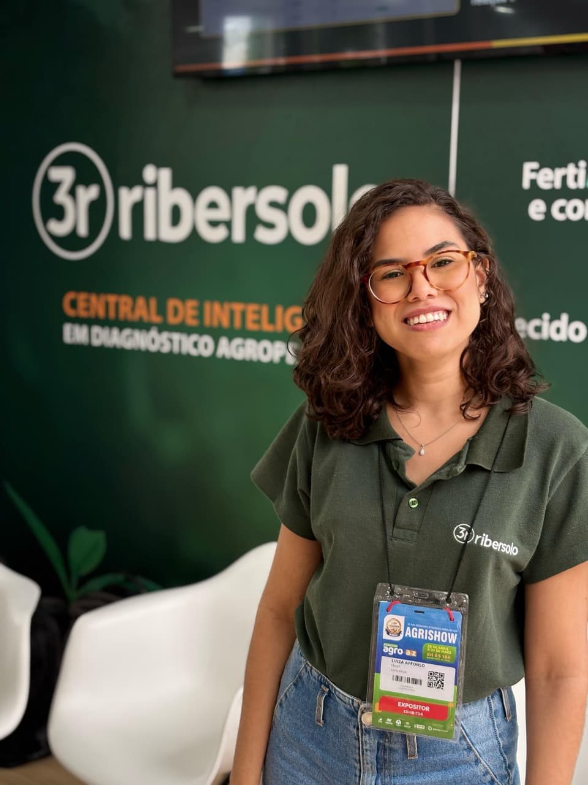
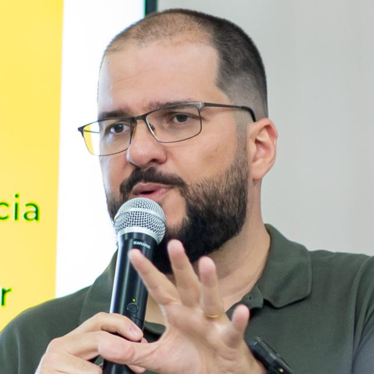

Palestrantes
9 palestrantes confirmados.

Palestrante
Tiago Rodrigues Tavares
Pesquisador Pós-Doc (CCARBON/USP), Agrônomo, Dr. em Eng. de Biossistemas
Centro de Pesquisa de Carbono em Agricultura Tropical — CCARBON/USP
Modernização do diagnóstico na agricultura: da química tradicional ao sensoriamento em robôs
Agrônomo com doutorado em Engenharia de Biossistemas e MBA em Ciência de Dados e ML. Atividades acadêmicas na USP, Univ. de Ghent (Bélgica) e Univ. de Sydney (Austrália). Prêmio 'Outstanding Graduate Student' (ISPA), menção honrosa Prêmio CAPES de Tese e Prêmio Tese Destaque USP, reconhecimento Bayer (Mentes da Inovação). Pós-doc FAPESP no CCARBON-USP (sensores para estoques de carbono no solo).
22/09 · 14h00–17h00 · livre

Palestrante
Luiza Maria Affonso Lopes da Silva
Mestra em Engenharia Agrícola (UFRRJ)
Universidade Federal Rural do Rio de Janeiro — UFRRJ
Diagnóstico em tempo real da textura do solo e nutrientes em folhas com sensor de fluorescência de raios X (XRF)
Bacharel e mestra em Engenharia Agrícola e Ambiental pela UFRRJ (área Meio Ambiente): desenvolvimento sustentável, conservação de solo e água, serviços ecossistêmicos, georreferenciamento e sensoriamento remoto. Atua com sensores espectroscópicos (XRF e Vis-NIR) para análises de solo, folhas e fertilizantes, com transferência de tecnologia para uso comercial.
22/09 · 15h00–17h30 · 20 pessoas

Palestrante
Stefania Fernandes dos Santos
Mestranda em Tecnologia Pós-colheita (FCAV/UNESP)
Faculdade de Ciências Agrárias e Veterinárias — FCAV/UNESP (Jaboticabal)
Da colheita ao consumidor: Estratégias de pós-colheita e nanotecnologia
Mestranda em Tecnologia Pós-colheita na FCAV/UNESP. Trabalha com nanotecnologia aplicada à pós-colheita, desenvolvendo nanoemulsão para aplicação em frutos. Engenheira Agrônoma e Técnica em Agropecuária pela FCAV/UNESP.
22/09 · 21h30–22h30 · livre

Palestrante
Eva Gabriela Vargas Martínez
Eng. Agrônoma (Univ. Nacional de Colombia), Mestranda em Produção Vegetal
FCAV/UNESP — Jaboticabal
Produção e propagação de mudas de frutíferas
Engenheira Agrônoma pela Universidad Nacional de Colombia e mestranda em Produção Vegetal (Fruticultura) pela UNESP Jaboticabal. Pesquisa sobre manejo biotecnológico de bactérias na cultura da manga; experiência em pesquisa e extensão no cultivo de abacate (Casanare, Colômbia).
22/09 · 14h00–17h30 · 30 pessoas

Palestrante
Gadiel Zilto Azevedo
Eng. Agrônomo (UFSC), Mestrando em Agronomia — Produção Vegetal
FCAV/UNESP — Jaboticabal
Produção e propagação de mudas de frutíferas
Engenheiro Agrônomo pela Universidade Federal de Santa Catarina (UFSC); mestrando em Agronomia (Produção Vegetal) pela FCAV/UNESP com bolsa FAPESP.
22/09 · 14h00–17h30 · 30 pessoas

Palestrante
Francisco José Domingues Neto
Prof. de Fruticultura (FCAV/UNESP), Me. e Dr. em Agronomia
FCAV/UNESP — Jaboticabal
Dupla Poda: uma inovação na Viticultura Brasileira
Engenheiro Agrônomo (Unimar, 2013), Licenciado em Biologia (Unifaveni, 2023). Mestre e Doutor em Agronomia com ênfase em Fruticultura pela FCA/UNESP (Botucatu), onde também fez pós-doutorado. Professor de Fruticultura na FCAV/UNESP Jaboticabal.
22/09 · 19h00–20h30 · livre

Palestrante
Rubens Tabile
Prof. Assistente — Eng. Mecânica e Agrícola (FZEA/USP)
Faculdade de Zootecnia e Engenharia de Alimentos — FZEA/USP
Biossistemas
Graduação em Engenharia Agrícola (Unioeste, 2005), mestrado em Agronomia (UNESP, 2008) e doutorado em Engenharia Mecânica (USP-EESC, 2012). Professor Assistente da FZEA/USP, com ênfase em Instrumentação e Controle.
23/09 · 14h00–16h00 · 20 pessoas

Palestrante
Bruno Kortz
Prof. e pesquisador em Administração e Marketing (Mestre UFSCar)
FATEC Itapetininga — Centro Paula Souza
IA na Prática: do Prompt ao Design com ChatGPT e Canva
Professor e pesquisador na área de Administração e Marketing, Mestre em Administração pela UFSCar e docente do Centro Paula Souza. Consultor de marketing, integra ciência, prática e novas tecnologias; desenvolve trabalhos sobre marketing, comunicação, inovação e aplicação de IA em contextos educacionais e profissionais.
23/09 · 09h30 (1h30) · 20 pessoas

Palestrante
Carlos Henrique da Silva Santos
Prof. Dr. — Professor Titular do IFSP; visitante MIT, Cornell e TU München
Instituto Federal de São Paulo — IFSP (Itapetininga)
Inteligência Artificial: mudanças no mercado de trabalho e na sociedade atual
Graduação em Tecnologia em Informática pela Unicamp (2003), mestrado (2005) e doutorado (2010) em Engenharia Elétrica pela mesma instituição. Professor Titular do IFSP (câmpus Itapetininga), coordena o GTAC. Pesquisador visitante no MIT (FAPESP), Cornell e TU München (Erasmus Mundus). Atua em IA, tecnologias assistivas e forense computacional de imagens.
22/09 · 19h30 · livre